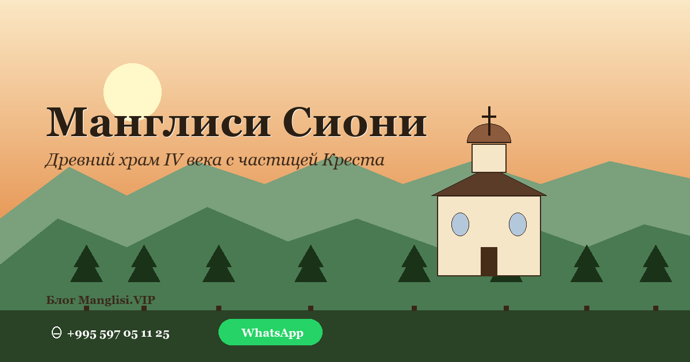

მანგლისის სიონის უძველესი ტაძარი
მანგლისის სიონი საქართველოს ერთ-ერთი ყველაზე ადრეული ქრისტიანული ტაძარია. ამ ადგილზე პირველი ეკლესია IV საუკუნეში აშენდა, ქრისტიანობის ქართლში სახელმწიფო რელიგიად გამოცხადებიდან მცირე ხანში. ახლანდელი ნაგებობა VI–VII საუკუნით თარიღდება.
რატომ აქ ტაძარი
გადმოცემის თანახმად, რომის იმპერატორმა კონსტანტინემ იბერიის (აღმოსავლეთი საქართველო) პირველ ქრისტიან მეფე მირიანთან გამოგზავნა ეპისკოპოსი იოანე. იოანემ თან მოიტანა წმინდა ნაშთები და სიმდიდრე. მან მანგლისში ტაძრის შენება დაიწყო და აქ დატოვა უფლის ცხოველმყოფელი ჯვრის ნაწილი.
არქიტექტურული იშვიათობა
მანგლისის სიონს დროისთვის უჩვეულო ფორმა აქვს — რვაკუთხედში ჩაწერილი ტეტრაკონქი. მეფე გიორგი I-ის (1014–1027) დროს ტაძარმა მასშტაბური რეკონსტრუქცია გაიარა: გადატანილი იქნა საკურთხეველი, აიგო ახალი გუმბათი, გაჩნდა მინაშენები და ქვის კარიბჭე, გარე კედლები კი დაიფარა მაღალოსტატური მოჩუქურთმებით.
სიწმინდეები
მანგლისის სიონი ინახავს:
- უფლის ცხოველმყოფელი ჯვრის ნაწილი — ერთ-ერთი მთავარი ქრისტიანული რელიქვია.
- მანგლისის ღვთისმშობლის ხატი, რომელსაც სასწაულმოქმედ თვისებებს აკუთვნებენ.
საუკუნეების მანძილზე
VII საუკუნეში მანგლისი ბიზანტიის იმპერატორ ჰერაკლიოსის შემოსევისას დაინგრა. XIX საუკუნეში, რუსეთის მმართველობის დროს, შესასვლელის თავზე ჯვარი დადგეს და გამოჩნდა თაღოვანი წარწერა რუსულ ენაზე.
როგორ ვეწვიოთ
ტაძარი მოქმედია, მდებარეობს მანგლისში — ცენტრალური ფიჭვნარიდან მხოლოდ 100 მეტრში, ჩვენი კოტეჯის გვერდით. ფეხით 10 წუთია. შესანიშნავი ადგილი სიჩუმისთვის, ფიქრისთვის და დილის შუქზე ფოტოგრაფიისთვის.